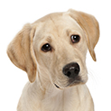

| תיאור כלבלביים | תכונות אופי | בריאות | אילוף | |
|---|---|---|---|---|
| באסט האונד | לכלבי הבאסט יש גוף ארוך וכבד, הרגליים שלהם מקומטות, שמנמנות וקצרות. כלבי הבאסט נוצרו כדי שיהיו מסוגלים לזוז בתוך שיחים צפופים ולרדוף אחר גיריות וארנבים בעזרת חוש הריח המפורסם שלהם. ראשם של הכלבים חזק, הגולגולת מעוגלת והעור הרפוי נופל בקפלים סביב הראש. האוזניים של הבאסט ארוכות ורכות והן מגיעות מעבר לחלק העליון של האף, עיניו חומות ועצובות. לגזע הבאסט פרווה עבה מאוד כדי להגן עליו מפניי השיחים הקוצניים במהלך הצייד. למרות שמדובר בכלב קטן בגודלו, הוא כלב כבד מאוד והתנועה שלו איטית, במהלך הרדיפה אחר הטרף הוא נע בנחישות קדימה, כאשר האף שלו צמוד לקרקע בניסיון לאתר את הריח של הטרף. | הפרצוף המתוק והעדין של כלבי הבאסט מסגיר את האישיות הטובה והנוחה שלהם ואת ההתנהגות השלווה. בזכות האישיות הנוחה שלהם גזע זה הפך לאחד מכלבי המשפחה הנפוצים ביותר והוא ידוע בסבלנות הקיצונית שלו. כלב הבאסט מחונך באופן טבעי, רוחו בדרך כלל טובה עליו והוא שופע חיבה לבעליו ומתאים בקלות לכל משפחה, האזהרה היחידה לגביי ילדים היא בנוגע לנטייה שלהם לרכב על גבו שיכולה להזיק מאוד לכלב. | אחת הבעיות המרכזיות של כלבי הבאסט היא השמנת יתר שיכולה לגרום למספר רב של בעיות בריאותיות ואפילו לשיתוק בגלל המעמסה הגדולה על הרגליים ועמוד השדרה. כמו כן, הגזע עלול לסבול מצליעה ברגל הקדמית, דלקת אוזניים חיצונית, מחלת הדיסק הבין חולייתי, גלוקומה, פיתול קיבה, ציסטות ברגליים וזיהום. את פרוות הכלב כדאי להבריש פעם או פעמיים בשבועיים, כדי להסיר קשקשים מתים ופרווה שנשרה, בזמן נשירה כדאי להבריש את הכלב פעמים רבות יותר. חשוב להקפיד על ניקיון האוזניים ולהשגיח שהכלב לא יישאר בשטח ללא השגחה לזמן ממושך, כדי שהוא לא יאכל אוכל מזוהם. פעילות גופנית: כדי שהבאסט לא יעלה במשקל הוא זקוק לפעילות גופנית על בסיס קבוע, חשוב להחזיק את הכלב קשור לרצועה בזמן הליכה מכיוון שהוא לא יגיב לקריאה לחזור בזמן שהוא רודף אחר חיה קטנה, או עוקב אחר ריח מסוים. |
למרות שכלב הבאסט הוא אחד הגזעים הפופולאריים עבור משפחות, הם לא נחשבים לטובים ביותר מבחינת אינטליגנציה או אילוף וקשה לקבל מהם תוצאות מהירות אם בכלל, בעיקר בגלל שהם לא רוצים ללמוד, אלא אם כן יש להם סיבה טובה לעשות זאת. המאלף או הבעלים צריך להראות להם "למה" הם צריכים ללמוד ולהפוך את הלמידה לכיף בעבורם בזכות תשומת הלב הרבה והעידודים החיוביים. כיבוד הגזע והבנת דרך החשיבה שלו, יכולים להקל מאוד על האימון, בנוסף על כך לפעמים צריך לנסות מספר שיטות אילוף עד למציאת השיטה המתאימה ביותר, מדובר בגזע עקשן ביותר והאילוף שלהם הוא אתגר לא פשוט הדורש סבלנות גדולה ואהבה רבה, יחד עם נחישות ועקביות. |
אלסקן מלמוט
| כלב מגזע אלסקן מלמוט הוא כלב יפה להפליא ויש בו הרבה יותר מיופיו הרב. גזע אלסקן מלמוט הוא גזע בעל ממדי גוף גדולים מאוד. מדובר בכלבי עבודה חזקים הבנויים היטב, אוהבים לצוד את טרפם ולחפור. הפרווה של כלבי אלסקן מלמוט היא כבדה וכפולה, לכן הם צריכים להיות במקום קריר כאשר בחוץ הטמפרטורות גבוהות. העיניים של כלב אלסקן מלמוט הן חומות בצורת שקד, כלבים מגזע זה בעלי עיניים כחולות נחשבים לכלבים מעורבים. צבעי הפרווה של כלב אלסקן מלמוט יכולים להיות: אפור, שחור או אדמדם, באזור הפרצוף, הבטן והרגליים יש להם פרווה בצבע לבן. |
גזע אלסקן מלמוט הוא גזע אנרגטי מאוד, הם זקוקים לשפע של תשומת לב ושפע של פעילות גופנית, עקב היותם כלבים אינטליגנטיים מאוד ובעלי מחשבה עצמאית, הם יכולים לסרב לציית לך. אין ספק שכלבים מגזע אלסקן מלמוט ייבחנו פעמים רבות את הסבלנות שלך וכדאי גם להרחיק אותם מחיות מחמד קטנות אחרות עקב נטייתם הטבעית לצוד. למרות האמור לעיל מדובר בכלבים נאמנים מאוד המגנים על הבית ואוהבים את שאר בני המשפחה. חשוב לציין שגורי אלסקן מלמוט הם מאוד אנרגטיים בהשוואה לכלבים הבוגרים יותר. | לגזע אלסקן מלמוט יכולות להיות מספר בעיות בריאותיות שכדאי לשים לב אליהן כגון: דיספלסיה של מפרק הירך, טונוס שרירים נמוך, גמדות, קטרקט ובעיות ראייה. מלבד זאת גזע אלסקן מלמוט נחשב לבריא מאוד ובעיות הבריאות נגרמות בדרך כלל בשל הזדקנות ולא מחלה. רכישת כלב אלסקן מלמוט עם שושלת בריאה עוזרת להפחית בעיות אלו. גם לתזונה ולפעילות הגופנית ישנה השפעה גדולה מאוד על בריאות הכלב. פרוות הכלב דורשת הברשה מספר פעמים בשבוע, חשוב גם להקפיד על בריאות השיניים של הכלבים מגזע אלסקן מלמוט ולצחצח את שיניהם באותה תכיפות של הברשת הפרווה. צריך לטפל בציפורני הכלב באופן סדיר. נשירת הפרווה היא כבדה מאוד ואין צורך לדאוג בגללה. אפשר לרחוץ את הכלב לעיתים קרובות, אפילו רק בשביל לקרר אותו. את כלב האלסקן צריך להפעיל לעיתים קרובות, עקב היותם כלבי עבודה, הם רוצים להיות עסוקים כל הזמן והם זקוקים למשחקים יחד עם הליכות ארוכות בכל יום. כלבים אלו צריכים להיות בשליטה ומרוסנים כאשר מוציאים אותם החוצה. |
כלבי האלסקן מלמוט הם כלבים נבונים וחכמים, לכן הם מתאימים מאוד לאילוף. הם זקוקים לאימונים אינטנסיביים כדי לעזור להם ללמוד כיצד להתנהג. שיגרה מאוד עוזרת לכלבי אלסקן מלמוט להבין מה נדרש מהם, לכן רצוי שיהיה להם סדר יום קבוע מהבוקר עד הלילה. האילוף של גזע אלסקן מלמוט צריך להיות חיובי ומתגמל, הם לא אוהבים תשומת לב שלילית והאילוף הטוב ביותר עבורם הוא אילוף של נימוסים טובים ולא של ציות פורמלי לפקודות, הזכרים הם יותר קשים לאילוף מהנקבות. |
| אמריקן בולדוג | חברו הטוב ביותר של האדם – הבולדוג האמריקאי – באמת מממש את המשפט הזה. הבולדוג האמריקאי מסמל אהבת אמת, מסירות וכוח סבל. הבולדוג האמריקאי מתואר ככלב אתלטי שיכול למלא תפקידים רבים. הם ידועים בזכות מעשי הגבורה שהם מבצעים כדי להגן על הבעלים שלהם, כלבים מגזע זה הם כלבים חזקים וחסונים ויש להם פרווה קצרה ונוקשה למגע. כלבת אמריקן בולדוג יכולה להמליט בין 6 ל- 16 גורים והם שייכים לזן הנדיר של כלבים שהם גם כלבים עובדים וגם כלבי שמירה. אמריקן בולדוג יכול לחיות בדירה או בבית, אם הם מקבלים תשומת לב על בסיס קבוע. הם בהחלט לא בנויים למזג אוויר קיצוני. | באופן כללי אפשר לומר שהבולדוג האמריקאי ידוע בתור חיית משפחה אוהבת והם טובים עם חיות מחמד אחרות וילדים. כלב זה יתקוף ללא היסוס תוקפים או כל אחד אחר שיאיים על הבעלים שלו. מדובר בגזע חסון, זריז עם לסתות חזקות והוא הוכשר בעבר כדי לשמור על הבקר. הבולדוגים האמריקאים הם מאוד עצמאיים, דומיננטיים ועקשנים, הם רוצים להיות הבוס בכל מצב, הם יבדקו האם תוכלו לגרום להם לעשות משהו שהם אינם רוצים, כבעלים אתם חייבים להיות תקיפים ועקביים ותמיד להתכוון למה שאתם אומרים. בנוסף כלבי האמריקן בולדוג צריכים להיחשף באופן קבוע לזרים ידידותיים, כי יש להם אינסטינקט הגנה טבעי כלפי אנשים שהם אינם מכירים, הם צריכים לדעת לזהות את ההבדל בין אנשים טובים לאנשים רעים. אם הם לא יעברו תהליך חיברות כמו שצריך הם עלולים לנשוך אחרים. כלבי הבולדוג האמריקאי יכולים להסתדר עם כלבים אחרים מאותו מין, אבל בגלל האינסטינקטים החזקים שלהם הם ירדפו אחר חיות אחרות, כאשר האילוף שלהם משתבש הם ידועים בפגיעתם בחיות אחרות ואפילו בהריגתן. | למרות שכלבי הבולדוג האמריקאי נחשבים לבעלי חיים בריאים וחסונים, חשוב להיות מודעים למספר בעיות בריאותיות פוטנציאליות כגון: דיספלסיה של מפרק הירך שיכולה לגרום לכאבים וקושי בעמידה או הליכה. בעיות בעיניים, אלרגיה של העור, בעיות חיסוניות וחירשות. כדאי לקנות גזע כלב זה ממגדל מהימן שיכול לתת לכם אחריות על הכלב. חשוב להבריש את פרוות הכלב באופן קבוע, הם אינם זקוקים לרחצה באופן קבוע, אלא רק כשהם מתלכלכים בחוץ, חשוב לגזוז את ציפורניו פעם בשבוע ולנקות את אוזניו עם שמן תינוקות וצמר גפן, כמובן שלא יותר מידי עמוק בתוך האוזן. פעילות גופנית: כלבי האמריקן בולדוג הם במיטבם כשיש להם תפקיד לבצע, הם אוהבים לצאת להליכות לעיתים קרובות, הם אוהבים לשחק עם בני המשפחה ולהתרוצץ בחצר. חשוב לאמן את הכלבים האלו על בסיס יומי לפחות שעה ביום ללא קשר למזג האוויר, אפשר אמנם לשמור על הכלב בתוך הבית, אבל הוא חייב לקבל מספיק פעילות גופנית כדי שיהיה בריא ומאושר. |
כאשר אתה מחליט לאלף את האמריקן בולדוג שלך, אתה חייב להיות מוכן לכך, אם לא תהיה מוכן, גזע זה נוטה להשתעמם בקלות ובסופו של דבר הוא יוציא את האנרגיה על רהיטים, שטיחים, נעליים וכדומה. נכון שהוא זקוק רק לשעה ביום של אילוף, אבל זו חייבת להיות שעה שמוקדשת אך ורק למען מטרה זו. האילוף של הגזע צריך להתחיל מוקדם ככל האפשר, הם לא יסתדרו עם אילוף חמור מידי, האילוף שלהם צריך להיות הוגן, עקבי ומלא בסבלנות. לאמריקן בולדוג יש כישורים רבים שאפשר לפתח כגון: ציד, שמירה, משיכת משקל ומעקב. לכלבים אלו אין משמעת עצמית והם נוטים להסתבך בצרות אם לא מטפלים בהם כראוי. חשוב לאמן אותם לעשות צרכים מחוץ לבית מוקדם ככל האפשר ולהכניס אותם לשגרה יומית קבועה כדי למנוע תאונות. הכנסת הכלב לשגרה קבועה יכולה לקחת עד ששה חודשים וחשוב לשמור עליה כל הזמן. |
| אמריקן פיטבול טרייר | כלבי האמריקן פיטבול טרייר הם גזע בינוני של כלבים מקבוצת הטריירים, כלבים אלו ידועים בנאמנותם, כוחם, ידידותם והחוכמה שלהם, הם יכולים להיות כלבי משפחה נפלאים וחיות מחמד נהדרות לילדים בגלל שהם תמיד ירצו לטפל בהם. כלבי האמריקן פיטבול טרייר הם כלבים חזקים, שריריים ומוצקים עם שכבה קצרה ונוקשה של פרווה שיכולה להיות כמעט בכל צבע. בשנים האחרונות גזע זה של כלבים קבל פרסום שלילי, לאו דווקא בגלל התנהגות ספציפית לגזע אלא בגלל הרבעה לא נכונה של גזעי "פיטבול". ישנם מקומות בעולם שאסור לגדל בהם כלבים אלו, למרות שרוב ההתנהגות השלילית שלהם נבעה מכך שהבעלים שלהם התעללו בהם ולא בגלל התכונות של הגזע עצמו. בעלים של כלבי האמריקן פיטבול טרייר טוענים שהם כלבים טובים, אוהבים, אינטיליגנטים שיכולים להיות חיות משפחה נפלאות. | את המזג של כלבי האמריקן פיטבול טרייר אפשר לתאר בדרכים רבות, כאשר המונח שמתאר אותם הכי טוב הוא ידידותי. הם ידועים בחכמתם הגדולה ובאופי היציב שלהם והם יכולים להיות חיית מחמד מצוינת. כלבי הפיטבול ידידותיים כלפי כל מי שהם רואים, בין אם הוא בן משפחה או זר. הם נהדרים עם ילדים, אבל הם יכולים לגרום לנזקים בתוך הבית. כלבי הפיטבול ידועים בזכות אינסטינקט הציד החזק שלהם, הם רואים ציפורים, ארנבות ובעלי חיים אחרים כמשחק הוגן בשבילם, אבל בעזרת משמעת נכונה ואם הם גדלים עם בעלי חיים אחרים מגיל צעיר, אפשר לצמצם בעיה זו. אם בעל חיים אחר יתחיל בקרב איתו, האמריקן פיטבול טרייר לא ייסוג ממנו. האישיות שלהם מאוד ידידותית והם נראים מטופשים כשהם מתגלגלים על הרצפה כדי לשחק עם בני משפחתם. הם סקרנים, אוהבים, פעילים ושובבים. מומלץ לא להשאיר אותם לב עם ילדים מכיוון שהם לא מודעים לכוח הרב שלהם ויכולים להכאיב בטעות, הם אינם פוגעים בילדים בכוונה גם כאשר הילדים מציקים להם, בגלל כוח הסיבולת הגבוה שלהם. כפי שציינו קודם לכן, בעיות התנהגות רבות נובעות מרבייה לא נכונה, לכן חשוב לקנות אותם כגורים ממגדל מכובד ורציני היודע נאמנה את מלאכתו. | כלבי האמריקן פיטבול טרייר הם כלבים בריאים יחסית שהבעיה העיקרית שהם יכולים לסבול ממנה היא דספלסיה של מפרק הירך, אפשר לעשות להם בדיקת רנטגן כדי לבדוק אם הם סובלים מבעיה זו. כלבי האמריקן פיטבול טרייר אוהבים לשחק בבוץ, לכן תצטרכו לנקות אותם ולבדוק שאין עליהם טפילים כאשר הם חוזרים הביתה. כדאי לטפל באוזניים, עיניים וציפורני הכלב על בסיס קבוע, כדי שהם יתרגלו לטיפול ואף ייהנו ממנו. האוזניים של הכלב צריכות להיות תמיד נקיות ויבשות
פעילות גופנית: כלבי האמריקן פיטבול טרייר דורשים המון פעילות גופנית, יש להם אנרגיה רבה ואם הם לא יוציאו אותה הם יעשו דברים שובבים והרסניים בתוך הבית, בגלל שהם כל כך שובבים הם אוהבים לצאת לטיולים, להסתובב בחצר, להתגלגל וגם כשמדגדגים אותם,.הם גם ייהנו ממשחקים של משיכות משקל ובסה"כ יאהבו לעשות כל דבר ביחד עם בני משפחתם. |
אילוף כלב האמריקן פיטבול טרייר הוא מאוד חשוב כדי לעזור לכלבים אלו להיות כלבי משפחה הטובים ביותר שאפשר. מכיוון שמטבעם הם אוהבים, נאמנים ואינטיליגנטים האילוף שלהם הוא קל, האילוף צריך להיות בקול תקיף ובצורה עקבית, כדי שהם ידעו מה מצופה מהם. כדאי להימנע מענישה גופנית שרק תגרום להם להיות נסערים ולא תשיג דבר. בזכות חכמתם הרבה כלבי הפיטבול ינסו להתחמק מהאילוף ועליכם להתעקש איתם. חשוב לאלף אותם לצייתנות מגיל צעיר דווקא בגלל השם השלילי שיצא להם. |
| אפגני | כלב הציד האפגני מגיע מגזע מאוד עתיק של כלבים אלגנטיים בעלי מראה מלכותי, יש לכלבים אלו מראה מרשים מאוד בזכות מבנה הגוף הצר והגבוה ופרוות המשי הרכה והארוכה שמתנופפת סביבם. הראש והצוואר הגבוהים של כלבי הציד האפגניים, גורמים לרבים לטעון שיש להם מראה סנובי מרוחק. ראשם של הכלבים גם הוא ארוך צר ומחודד, העיניים של גזע זה כהות ובצורת שקד, האוזניים ארוכות מאוד ומגיעות מעבר לפנים שלהם. הליכתם של כלבים מרהיבים אלו אצילית, ראשיהם נישאים בגאון ופרוותם מתנופפת סביבם. | למרות המראה אריסטוקרטי, הכלבים האפגניים הם בעצם כלבים חמודים מאוד שאוהבים להשתעשע ונהנים מתשומת לב. כלבים אלו נקשרים בדרך כלל לאחד או שניים מבין בני המשפחה ובוחרים לציית רק להם. האישיות שלו דומה לחתול, הם בוחרים מתי הם יקבלו תשומת לב וידידות. כלבים אלו אינם מתאימים לילדים קטנים עקב ביישנותם ועצבנותם מתנועות פתאומיות וקולות רמים, הם נהנים מאינטראקציה עם ילדים בוגרים ויכולים להתחבר בצורה טובה לחיות מחמד אחרות. האופי של הכלבים האפגניים הוא מגוון מאוד וטמפרמנטי, הם מאוד אוהבים לשחק. לפעמים הם גם נוטים להיות סרבניים ואינם מצייתים לפקודות במיוחד לחזור חזרה כאשר הם עסוקים בריצה או במשחק. אילוף עקבי ואינטראקציה חיובית עם המשפחה, הם הדרך הטובה ביותר לשפר את אופיו של כלב הציד האפגני ולהפוך אותו למתוק ועדין. | בעיות הבריאות הנפוצות ביותר אצל הכלבים האפגניים הם בלב, בעיניים ופציעות בזנב. לכלב האפגני יש סף כאב נמוך והם זקוקים לתשומת לב בכל סוג של פציעה. מלבד זאת הם יכולים לסבול משיתוק נשמתי אצל גורים, קרדיות אוזניים ודלקות אוזניים, אלרגיות לחלב ולסוגים מסוימים של מזון, קטרקט, דיספלסיה של מפרק הירך. כלבים אלו גם נוטים להיות רגישים לסוגים מסוימים של תרופות כמו תרופות להרדמה. השיער הארוך והיפה של הכלב זקוק לסירוק קבוע כדי לשמור על המראה שלו וכדי להימנע מקשרים, הסירוק יכול לקחת מספר שעות בשבוע. כלבים שמשמים לתצוגות זקוקים לרחצה אחת לשבוע, כדאי להתאים את המברשת לאורך הפרווה של הכלב האפגני ולהשתמש בתרסיס לחות. פעילות גופנית: הכלב האפגני זקוק לשני פרקי זמן של 60 דקות לצאת ולרוץ בשטח מגודר, הם רצים רק בשביל ההנאה שבפעילות עם או בלי חברה, הם חייבים לדהור באופן חופשי כדי לחזק את השרירים שלהם. השטח שבהם הם מופעלים חייב להיות מגודר עקב סירובם לחזור, הם גם אוהבים לרדוף אחר מכוניות, חתולים וכל דבר אחר שיתפוס את תשומת לבם. |
כלבי הציד האפגניים הם כלבים חכמים מאוד, אבל יש להם נטייה עצמאית הדורשת מהבעלים שלהם סבלנות והבנה. הם זקוקים לאימון עקבי ותקיף, אבל אסור לדבר אליהם בחומרה או בטון כועס כי הם יעלבו ויהפכו לביישניים, עצבניים ומתוחים, לכן האילוף צריך להיות רגוע ועדין בנוסף לפעילות הגופנית על בסיס יומיומי, הפעילות צריכה להיות מגוונת מכיוון שהם נוטים להשתעמם. הכלבים האפגניים חייבים להיות קשורים ברצועה כדי למנוע מהם לברוח. אילוף במקצועי בכיתה יכול מאוד להועיל להם. |
| אסקימו אמריקאי | הכלב האסקימו אמריקני נודע בשלב פרוותו הלבנה, הארוכה, העשירה והיפיפייה. לגזע זה יש שלושה גבהים שונים, מיניאטורי, בינוני וגדול. סימן היכר נוסף הוא הפרצוף המחודד שלהם, האוזניים השפיציות והזנב העשיר בפרווה ארוכה. למרות שישנם כלבים מהגזע הזה בעלי עיניים כחולות הם בדרך כלל נוטים לסבול מבעיות בריאותיות. * לגזע האסקימו אמריקאי אין בית גידול בארץ וכלבים מגזע זה מגיעים לארץ ביבוא אישי בלבד. |
כלבי האסקימו אמריקני נחשבים לכלבי לוויה מעולים, הם נאהבים בזכות האינטליגנציה הגבוהה שלהם, הערנות שלהם ואומץ לבם, הגזע נחשב למאוד פעיל ושופע אהבה. הכלבים האסקימואים מסתדרים עם כל חיות המחמד ויכולים לחיות גם בדירה וגם בבית פרטי, כל עוד הם מקבלים את הפעילות הגופנית שלה הם כל כך זקוקים. בזכות גודלם הקומפקטי, האינטליגנטיות והנאמנות שלהם, כלבי האסקימו אמריקני נחשבים גם לחיית מחמד אידיאלית וגם לכלבי שמירה טובים. | גזע הכלבים נחשב לגזע בריא, הם יכולים לסבול מבעיות בעיניים העלולות לגרום לעיוורון בסופו של דבר, לכן הם זקוקים למעקב קבוע אצל וטרינר. בנוסף לכך ישנם כלבים שנוטים לסבול ממחלות פרקים ויש להם נטייה לעלות במשקל, אם הם אינם מבצעים פעילות גופנית באופן קבוע. בגלל הפרווה הארוכה והעבה שלהם, הם זקוקים לסירוק לפחות פעמיים בשבוע. פעילות גופנית: האסקימו אמריקאי זקוקים לפעילות גופנית קבועה על בסיס יומי, מכיוון שהם מלאי אנרגיה והם חייבים לפרוק אנרגיה זו בכל יום, אחרת הם יהפכו לרועשים מאוד ולעיתים אפילו להרסניים. הדרך הכי טובה למנוע התנהגות שלילית אצל גזע זה היא לעייף אותם. בכל יום הם זקוקים לטיול של 20 עד 45 דקות, בנוסף אפשר תמיד לתת להם לשחק עם צעצוע אהוב בחצר האחורית. |
למרות האינטליגנציה הגבוהה של הכלבים, הם לא תמיד קלים לאילוף. כדאי להתחיל באילוף מיד כאשר כלב האסקימו מגיע לבית החדש. אמנם הכלבים הללו אוהבים לרצות את הבעלים שלהם, אבל הם לא אוהבים לעבוד קשה, לכן בעלים רבים מעדיפים לקחת אותם לכיתות אילוף מקצועיות. באופן כללי ניתן לומר שכלבי האסקימו אמריקאי זקוקים לאילוף עדין מאוד, יחד עם פקודות קצרות ותקיפות. |
| גולדן רטריבר | כלבי הגולדן רטריבר מחולקים לשתי קבוצות, החלוקה מבוססת בעיקר על המראה שלהם. הקבוצה הראשונה היא הקבוצה האנגלית, כלבים אלו נמוכים יותר, העצמות שלהם כבדות והפרווה ארוכה ובהירה בצבעה. הקבוצה האמריקאית מכילה כלבים גבוהים ורזים עם גפיים ארוכות יותר, מלבד זאת היא דומה במאפייניה לקבוצה הראשונה. לכלבי הגולדן רטריבר עיניים מלאות הבעה ואף שחור. ככל שהם מתבגרים החזה שלהם הופך לרחב יותר וגופם מקבל מבנה שרירי. הזנב של כלבים אלו תמיד מכשכש. כלבי הגולדן רטריבר הם בדרך כלל מלאי ביטחון, שבא לידי ביטוי בדרך שבה הם הולכים, הגוף שלהם סימטרי והם מאוד אתלטיים. הגישה שלהם שלווה ומלאת חיבה. לכלבי הגולדן רטריבר פרווה כפולה, הפרווה החיצונית היא רכה כנוצה והיא יכולה להיות ישרה או גלית, הפרווה התחתונה היא עמידה בפניי מים ושומרת על חום גופו של הגולדן. הגולדן משיר את פרוותו ובזכות כך היא מתאימה לו לכל עונות השנה. כלבי הגולדן רטריבר מחולקים לשתי קבוצות, החלוקה מבוססת בעיקר על המראה שלהם. הקבוצה הראשונה היא הקבוצה האנגלית, כלבים אלו נמוכים יותר, העצמות שלהם כבדות והפרווה ארוכה ובהירה בצבעה. הקבוצה האמריקאית מכילה כלבים גבוהים ורזים עם גפיים ארוכות יותר, מלבד זאת היא דומה במאפייניה לקבוצה הראשונה. לכלבי הגולדן רטריבר עיניים מלאות הבעה ואף שחור. ככל שהם מתבגרים החזה שלהם הופך לרחב יותר וגופם מקבל מבנה שרירי. הזנב של כלבים אלו תמיד מכשכש. כלבי הגולדן רטריבר הם בדרך כלל מלאי ביטחון, שבא לידי ביטוי בדרך שבה הם הולכים, הגוף שלהם סימטרי והם מאוד אתלטיים. הגישה שלהם שלווה ומלאת חיבה. לכלבי הגולדן רטריבר פרווה כפולה, הפרווה החיצונית היא רכה כנוצה והיא יכולה להיות ישרה או גלית, הפרווה התחתונה היא עמידה בפניי מים ושומרת על חום גופו של הגולדן. הגולדן משיר את פרוותו ובזכות כך היא מתאימה לו לכל עונות השנה. |
כלבי הגולדן רטריבר הם משפחתיים ונאמנים מאוד. האופי הנוח שלהם הופך אותם למתוקים ועדינים עם ילדים וסובלניים כלפי בעלי חיים אחרים. חשוב לזכור שיש להם נטייה להתרגש כמו גורים, כאשר הם משחקים עם ילדים והם עשויים בטעות לפגוע בהם. אגרסיביות היא אינה תופעה נפוצה אצל הגולדנים, אבל הרבעה לא נכונה יכולה לגרום לכך. כלבים אלו אוהבים אנשים ואוהבים להיות מלוטפים ומחובקים בכל זמן, הם יכולים להיכנס לצרות אם הם יישארו לבדם לזמן ממושך, במצב כזה הם גם עלולים לפתח חרדת נטישה, ולהיות אומללים וחרדתיים. כלבי הגולדן אינם טובים בתור כלבי שמירה מכיוון שהם יותר מעוניינים לפגוש זרים ולהתיידד עמם מאשר לנבוח עליהם. הם אוהבים ונאמנים וינסו לרצות את האנשים שלהם כל הזמן. לכלבי הגולדן רטריבר רמת אנרגיה גבוהה, הם אוהבים מאוד לשחק בלהביא חפצים, הם גם מאוד אוהבים מים. האינטליגנציה הגבוהה של כלבי הגולדן רטריבר הופכת אותם למצוינים באימוני צייתנות. לעיתים קרובות גזע זה משמש ככלבי שירות לעיוורים ולנכים. האישיות האידיאלית שלהם, מלאת החיבה, הופכת אותם גם למבקרים מצוינים בבתי אבות והם יכולים להיות כלבי תרפיה נפלאים. |
בעיות הבריאות הנפוצות של הגולדנים הם כדלקמן: דיספלסיה של המפרק שיכולה לגרום לחוסר נוחות קיצוני, נפיחות, דלקת פרקים ואפילו פציעה. קטרקט, אפילפסיה, אלרגיות עור ומחלות לב תורשתיות. מחקרים אחרונים מראים כי הסרטן הפך לגורם השכיח ביותר לתמותת הגולדנים, הסיבה לעלייה במקרי הסרטן היא גם גנטית וגם סביבתית. חשוב להבריש היטב, על בסיס יומי, את פרוותם הכפולה של הכלבים. בעלי כלבים רבים מתלוננים על הנשירה הכבדה של הגולדנים בעיקר באביב, הברשה היא הפתרון הטוב ביותר לכך. חשוב לקצוץ את הציפורניים שלהם באופן קבוע, כמו כן מומלץ לבדוק את אוזניי הכלבים לוודא שאין בהן פטריות או זיהומים אחרים. רחצת הכלב בשמפו מיוחד תעזור להוריד את הריח הכלבי שלהם. פעילות גופנית: כלבי הגולדן רטריבר הם פעילים מאוד והפעילות הגופנית היא חלק חשוב מהטיפול היומי בהם. הם אוהבים מאוד להחזיר כדורים, מקלות או צלחות פריזבי, כדאי לתת להם גם הזדמנויות להתרועע עם כלבים אחרים ולצאת עמם לטיולים ארוכים. כמו כן, הכלבים ייהנו מפעילויות של שחייה וריצה. תרגילים מנטאליים מאוד חשובים לכלבים אלו, הם משתוקקים לרצות ונהנים כאשר יש להם עבודה ששומרת עליהם עסוקים וגם מזכה אותם באישור חיובי מהבעלים. |
כלבי הגולדן רטריבר ידועים באילופם הקל, הם נלהבים ללמוד ולהוטים לרצות, האינטליגנציה הגבוהה שלהם מאפשרת להם ללמוד תרגילים חדשים בקלות ובמהירות. כלבי הגולדן טובים בללמוד כיצד לבצע עבודות, לכן הם עובדים עם המשטרה באיתור סמים וכדומה. המוחות המהירים שלהם הופכים אותם למועמדים פופולאריים להיות כלבי סיוע ואת ההכשרה לתפקיד הם רוכשים כבר מאז שהם גורים. חשוב ללמדם בראש ובראשונה את הפקודות הבסיסיות כגון: שב, בוא, הישאר, עקוב, ככל שהפקודות האלו יהיו מבוססות היטב אצל הכלב, כך יהיה לכם קל יותר לטפל בהם כאשר הם יגדלו וגם להתקדם עם ההכשרה לאילוף מורכב יותר. |
| ווסט היילנד וייט טרייר | כלב הווסט היילנד וייט טרייר ידוע לאנשים רבים בשם "ווסטי". כלב זה הוא אמנם כלב קטן, אבל הוא מאוד קשוח וחסון. מדובר בכלב בעל מראה מרשים, במיוחד כאשר שומרים על טיפוח פרוותו באופן עקבי. כלב הווסט היילנד הוא כלב מאוד אלגנטי במראהו, בזכות הפרווה הלבנה ועיניי הכפתור שלו. הראש של כלב הווסט היילנד וייט טרייר בעל צורה עגולה והעיניים הכהות שלו הן בצורת שקד ובעלות מסגרת שחורה. אוזניי הווסטי זקופות וקטנות. האף של הכלב בצבע שחור ולסתותיו חזקות מאוד, שיני הכלב גדולות בהשוואה לפיו הקטן. פרוות כלבי הווסט היילנד היא כפולה, גבם ישר ורגליהם חזקות ושריריות מאוד. ההליכה של כלבי הווסטי קלילה ויציבה. | כלב הווסט היילנד וויט טרייר הוא כלב חכם מאוד שאוהב לשהות בחברת בני אדם גם בתוך הבית וגם מחוצה לו, אבל לכלב זה יש בעיות עם חיות אחרות או חיות קטנות. אם אתם מתכננים לאמץ חיית מחמד חדשה, עליכם להציג את הווסטי בהדרגה לאותה חיה, ועליכם לדאוג בתקופה ההסתגלות לתת תשומת לב מלאה לווסטי שלכם. כלבי הווסטי הם כלבים מאוד שמחים וסקרנים, הם תמיד מנסים להיות במרכז הפעילות. כלבים אלו נחשבים לאוהבים ביותר מבין שאר גזעי הטרייר. הם יכולים גם להרגיש קנאה אם הם מרגישים שאהבה אליהם פחתה. כלבי הווסט היילנד מפופולאריים מאוד בזכות האישיות המגוונת שלהם. גזע זה אוהב לנבוח, לחפור, להשוויץ בעצמאות שלו ולהתעקש. רמת האנרגיה הגבוהה דורשת להוציא כלבים אלו לטיולים בפארק, לתת להם שיעורי אילוף, להביא להם צעצועים, לשחק עמם ועוד. כלבי הווסטי ישנים כ- 13 שעות ביום, בעיקר בגלל כמות האנרגיה הגדולה שהם מוציאים בשעות העירות שלהם. המגרעות העיקריות באופיו של כלב הווסטי יכולות להיות ביישנות יתר או תוקפנות יתר. | לכלבי הווסט היילנד וייט טרייד יש בעיות בריאות מועטות והם נחשבים לכלבים חסונים ובריאים. כלבי הווסטי צריכים להיות רגילים לטיפוח מגיל צעיר ככל האפשר. התחילו להרגיל אותם לכך באמצעות טיפוח שנמשך 2 עד 3 דקות ולאט לאט תוכלו להוסיף עוד מספר דקות להברשה. עליכם להיות תקיפים בזמן שאתם מרגילים את הווסטי שלכם להברשות, אבל אל תענישו אותו או תצעקו עליו. שגרת הטיפוח צריכה לכלול גם גזירת שיער במקומות הנחוצים ובדיקת אוזניים. אם לא תרגילו את כלבכם לשגרת הטיפוח, ואם הם לא ילמדו ליהנות ממנה, הם יכולים לפתח חרדות. ההחלטה האם לספר את כלב הווסט היילנד וויט טרייר תלויה בעיקר בשאלה האם אתם רוצים להציג אותו בתערוכה. גילוח הפרווה יכול להפוך את פרוות הכלב לגסה יותר. פעילות גופנית: התרגול של כלבי הווסט היילנד וויט טרייר צריך להיות שילוב בין תרגול פיזי לתרגול מנטאלי. התרגול שומר על הכלבים בכושר ובמקביל מוריד את החרדה שלהם. הכלבים זקוקים בנוסף למשחקים בפארק ולהליכות ארוכות. כאמור, לכלבי הווסטי כמות עצומה של אנרגיה, אם הם לא יקבלו מספיק פעילות גופנית כדי להוציא אנרגיה זו, התנהגותם עלולה להפוך להרסנית כגון: לעיסת חפצים, נביחות בלתי פוסקות, חפירה, הקאות, בעיות בעשיית הצרכים ודיכאון. |
כלבי הווסטי הם כלבים גדולים הכלואים בתוך גוף קטן. הם אמיצים, אינטליגנטיים, עצמאיים, עקשניים ועם המון הערכה עצמית – תכונות מגוונות אלו יכולות להפוך את האילוף שלהם לאתגר. חשוב שכלבים אלו לא יהפכו לשתלטניים ותוקפניים כי הם עשויים לתקוף ולנשוך. כדי שהאילוף יצליח אתם חייבים קודם כל להעביר אותם תהליך סוציאליזציה נכון ולתת להם את הפעילות הגופנית הדרושה להם. כלבי הווסט היילנד טרייר צריכים לדעת קודם כל את הפקודות הבסיסיות כגון: לשבת, לבוא, להישאר, למטה וכדומה. האילוף צריך להיות נוקשה אך חיובי. הקפידו לסיים כל אילוף עם פקודה שהכלב שלכם כבר יודע כדי שהוא ירגיש טוב לגביי ההישגים שלו |
| יורקשייר טרייר |
הפרווה הארוכה והמבריקה של היורקשייר טרייר נגררת על הקרקע והיא מחייבת הברשה וניקוי יומיומי. השיער על ראש הכלב קשור למעלה או מפוסק לצדדים באופן שווה עד לזנב. צבע הפרווה הוא בגוון כחול על הגוף והזנב וחום אדמדם באזורים אחרים, לפעמים ישנה גם פרווה בצבע צהוב זהב סביב הפנים של היורקשייר. הראש של הכלבים קטן ושטוח במקצת ואפם שחור. העיניים הן בגודל בינוני בצבע כהה. האוזניים של היורקשייר טרייר קטנות וזקופות בצורת V, האוזניים מכוסות בשיער קצר. גופם של כלבי היורקשייר הוא קטן וקומפקטי וגבם ישר. הפרווה על הגוף היא באורך בינוני, ישרה ובעלת מגע של משי. השיער על ראש הכלב והלוע הוא ארוך מאוד ומגיע עד לגופו, אם הכלב אינו הולך לתערוכות כלבים, אפשר לגזור את השיער מעט. |
למרות שכלב היורקשייר טרייר ידוע בעיקר בשל פרוותו היפה, יש לו המון תכונות נפלאות, אשר גרמו לגזע זה להפוך לפופולארי מאוד. כלבי היורקשייר טרייר משתייכים לקטגוריית כלבי הצעצוע, אבל הם גם כלבי שמירה ללא חת. יש להם חוש שמיעה מפותח מאוד והם ישמעו אדם מגיע, הרבה לפני שהוא ינקוש על הדלת – כלבי היורקשייר אינם מודעים לגודלם הקטן כאשר הם שומרים על הבית. כלבים אלו מאוד נאמנים לבעליהם ויעדיפו לישון במיטתם. כלבי היורקשייר טרייר מלאי אנרגיה והם גם טובים עם ילדים, אבל אם מדובר בילדים קטנים או שובבים, הילדים זקוקים להשגחה כדי שלא יפגעו בכלב. כלבי היורקשייר טרייר הם בעלי דעה משלהם, הם אוהבים מאוד לשחק ואפילו להסתבך בצרות. כלבים מתוקים אלו לא יעשו משהו, אם הם החליטו שלא לעשותו, ולמרות שהם מסווגים ככלבי צעצוע הרבה טרייר נשאר בתוכם. כלבי היורקשייר טרייר אוהבים להיות עסוקים וסקרנים. הם יכולים להיות אגרסיביים כלפי כלבים וחיות מחמד אחרות. |
גזע היורקשייר טרייר עשוי לסבול מבעיות גנטיות בכבד, קריסת קנה הנשימה, מחלת Legg Perthess"" וניוון רשתית מתקדם. חשוב לשמור עליהם מחוסנים באופן עקבי ולדאוג לניקיון שינייהם. הם יכולים להיות גם רגישים לנפילות בגלל גודלם הקטן. פרוות היורקשייר טרייר אינה נושרת, אבל היא זקוקה לטיפוח רב ועליכם להרגיל את הגור לכך כבר מגיל צעיר. אם אינכם רוצים או יכולים להתעסק זמן רב עם הפרווה ואם הכלב שלכם אינו הולך לתערוכות, אתם יכולים לספר אותו. השמירה העיקרית של הפרווה היא מפני קשרים, חשוב להבריש היטב את הפרווה ולרחוץ את הכלב עם שמפו לכלבים עשיר בלחות. רחצת הכלב צריכה להיעשות פעם בשבוע. פעילות גופנית: כלבי היורקשייר הם כלבים קטנים והרפתקניים. הם לא דורשים פעילות גופנית רבה, אבל מאוד אוהבים טיולים. כלבים אלו זקוקים לתשומת לב ומשחק הוא דרך נפלאה להפעיל אותם. היורקשייר אוהב גם לרוץ בתוך החדר, אבל עליכם לוודא שמדובר בחדר בטוח בשבילו. כדאי תמיד לשמור אותם בטווח ראייה – גם כהגנה מפני גניבתם. |
כלבי היורקשייר טרייר הם כלבים מאוד אינטליגנטיים, אבל באותה מידה הם יכולים להיות מאוד עקשנים. שמירה על אילוף חיובי ומהנה היא דרך מצוינת להגיע אליהם. כלב היורקשייר נוטה להשתעמם מהר ולכן חשוב שהאילוף יהיה חוויה טובה עבורו. תוכלו ללמד את היורקי שלכם לבצע טריקים חדשים באמצעות פינוק קטן והמון שבחים. אתם חייבים להיות בעלי חוש הומור, מכיוון שכלבי היורקשייר טרייר ינסו להערים עליכם. חשוב שכלבים אלו ילמדו כיצד להתנהג עם כלבים אחרים עוד בהיותם גורים, הדבר יפחית את האגרסיביות שלהם כלפי כלבים אחרים או בסביבה חדשה. חשוב שהכלבים יהיו סגורים בחצר מגודרת היטב, או קשורים לרצועה אחרת הם ינסו לברוח. |
| לברדור רטריבר  | כלבים מגזע לברדור רטריבר הם אחד מהכלבים הפופולאריים ביותר והקלים ביותר לזיהוי בעולם. הכלב הוא גדול וגבוה ויש לו מבנה גוף כבד ושרירי בעל חזה רחב. הגולגולת של הכלב רחבה, האוזניים גדולות ושמוטות, האף מוארך והרגליים שלו ארוכות ביחס לגוף. הזנב של הכלבים מותאם לשחייה במים והוא מאזן את גופם בזמן שהם שוחים. כלבי הלברדור רטריבר מגיעים בשלושה צבעים בסיסיים – שוקולד, שחור וצהוב. הפרווה של הכלבים היא קצרה ומעט קשה למגע. | כלבים מגזע לברדור ריטריבר הם כלבים פעילים מאוד, הם גודלו למטרות ציד ושחייה ויש להם אנרגיה רבה. כלבים אלו יכולים להיות חיות מחמד מעולות וחברים נפלאים, אבל הם גם מהווים אתגר לאילוף עבור בעלי הכלבים חסרי הניסיון. מי שיודע כיצד להתמודד עם האופי שלהם יגלה כלבים נפלאים, אבל מי שלא ייתן להם את תשומת הלב הנחוצה להם, יגלה שהם יכולים להפוך לסיוט. כלבי הלברדור רטריבר הם מאוד ידידותיים וקל להציגם בפניי אנשים חדשים ללא חשש מהתנהגות תוקפנית, או נביחות מוגזמות, אבל הנטייה שלהם לקפוץ על אדם חדש יכולה להרתיע אנשים רבים. למרות שמדובר בכלבים אינטליגנטיים מאוד, יצא להם מוניטין של שוטים בעיקר בגלל ההיפראקטיביות שלהם. הם גם אינם בשלים נפשית עד גיל שלוש. אימון מוקפד יכול לעזור לכלבים אלו לחשוב לפניי שהם פועלים ולהתנהג כראוי. כלבי הלברדור רטריבר יכולים להתאים לילדים, אבל מכיוון שהם יכולים להזיק להם שלא בכוונה ולפעמים אף לפצוע אותם, חייבים להשגיח עליהם בזמן שהם משחקים עם הילדים. בגלל ידידותם הרבה הם אינם כלבי שמירה טובים. |
גזע הלברדור רטריבר נחשב באופן כללי לגזע בריא, אבל הוא יכול לפעמים לסבול מבעיות בריאותיות כשהגדולה מכולן היא דיספלסיה של המפרק. כמו כן, הם נוטים למחלות עיניים כגון ניוון רשתית. יש להם תיאבון גדול וכתוצאה מכך נטייה להשמנה ולכן חשוב שהבעלים יקפידו על כך שהם יאכלו במידה הראויה להם ולא ישמינו. חשוב להבריש את פרוותם הנוקשה באופן קבוע כדי להסיר שיער מת, חשוב לרחוץ אותם בשמפו עדין כדי לא לפגוע בפרווה העמידה במים שלהם. מומלץ לבדוק את האוזניים של הלברדור באופן קבוע. פעילות גופנית: כלבי הלברדור רטריבר זקוקים להמון פעילות גופנית, במיוחד בשלושת השנים הראשונות לחייהם, המינימום שדרוש הוא שתי הליכות ארוכות ביום. הקפידו להשתמש ברצועה חזקה, מכיוון שהם מאוד חזקים והם יכולים למשוך אתכם ולהוציא אתכם משווי משקל. מעבר להליכות, תהיו חייבים למצוא מקום לפעילות הגופנית שלה הם כל כך זקוקים, חצר סגורה היא הפתרון הטוב ביותר. הגדר של החצר חייבת להיות גבוהה מאוד מכיוון שהם יודעים לקפוץ היטב והם יכולים לברוח בקלות מחצר בעלת גדר נמוכה. כלבי הלברדור רטריבר אוהבים מאוד לשחות והם ייהנו מכל הזדמנות שתקרה על ידם לעשות כן. כאשר מדובר בכלבים צעירים עליכם לשמור עליהם בשחיות הראשונות שלהם. |
התנהגותם הנרגשת והקופצנית של כלבי הלברדור רטריבר מחייבת אילוף מוקפד בעיקר בגלל גודלם וכובד משקלם, לכן אתם חייבים להתחיל באילוף בגיל צעיר ככל האפשר. בתחילה הכירו לכלב את הפקודות הבסיסיות ובמיוחד "לשבת" ו"ארצה". האילוף שלהם צריך להיות עקבי וחיובי בעזרת מתן פרסים על התנהגות טובה ועונשים על התנהגות שלילית. חשוב שהפקודות והאילוף יתואמו על ידי כל המשפחה, מכיוון שאם אחד מבני המשפחה כן יסכים להתנהגות שלילית, לדוגמא קפיצה על אנשים, הכלב ימשיך לקפוץ על אנשים בגלל המסר הלא ברור. כל בני המשפחה חייבים להיות מודעים לכללים בנוגע לכלב ולאכוף אותם עליו. מדובר בכלבים מאוד אינטליגנטיים שלא יבצעו פקודה אם היא נראית להם לא הגיונית. פרסים חיוביים על התנהגות טובה צריכים להיות מילוליים ועל ידי הבעת חיבה מעשית כגון ליטופים וחיבוקים, פרסים של מאכלים אהובים יכולים להיות בעייתיים עקב העובדה שכלבים אלו נוטים לאכול יותר מידי ולהשמין. |